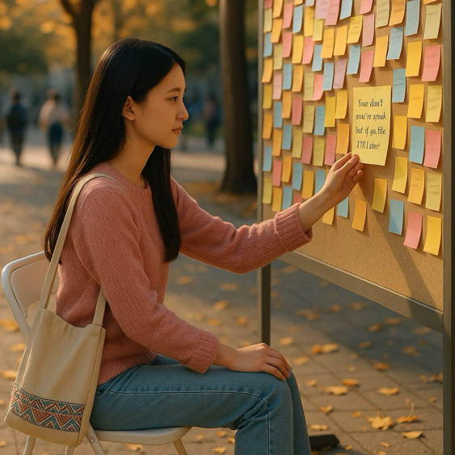

She brought a chair and sat in front of the wall, attaching a note: "You don't need to speak, but if you like, I'll listen."
Jun decides to approach and engage with Rose’s invitation, starting to respond to the comments publicly.